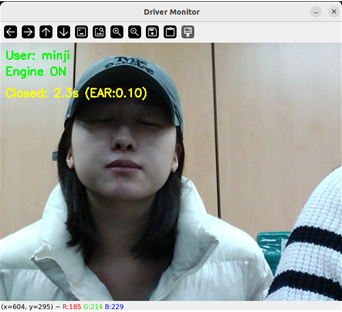
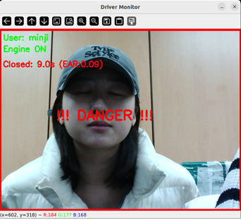
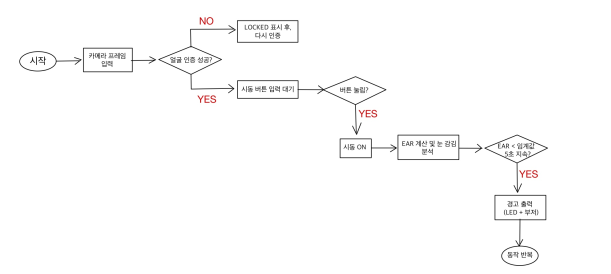

프로젝트 배경
졸음운전 및 부주의로 인한 사고 비율이 증가함에 따라, 자율주행 Level 2~3 단계에서 필수적인 실시간 운전자 모니터링 시스템(DMS)의 중요성이 대두되었습니다.
그러나 기존 시스템들은 고가의 하드웨어에 의존하거나, YOLO 등 무거운 AI 모델을 사용하여 저사양 임베디드 환경에서 실시간 구동이 어렵다는 한계가 있었습니다.
졸음운전 및 부주의로 인한 사고 비율이 증가함에 따라, 자율주행 Level 2~3 단계에서 필수적인 실시간 운전자 모니터링 시스템(DMS)의 중요성이 대두되었습니다.
그러나 기존 시스템들은 고가의 하드웨어에 의존하거나, YOLO 등 무거운 AI 모델을 사용하여 저사양 임베디드 환경에서 실시간 구동이 어렵다는 한계가 있었습니다.
Jetson Nano 환경에서 얼굴 인증(보안)과 졸음 감지(안전)를 동시에 수행하는 저비용·고효율 통합 시스템 구축
25 FPS 이상의 프레임 레이트 유지
등록된 사용자 외 시동 차단
LED, 부저와 즉각적인 인터랙션 구현
InsightFace 모델을 활용한 얼굴 검출 및 특징 추출
MediaPipe FaceMesh 기반 실시간 눈 상태 분석
GPIO를 통한 하드웨어 인터페이스 개발
등록되지 않은 사용자는 User: Unknown · LOCKED로 유지되어 시동이 차단되고, 등록된 사용자만 인증 완료 후 READY 상태로 시스템이 활성화됩니다. 미등록자 차단과 정상 인증 흐름을 한 화면에서 비교해 보안 동작을 확인했습니다.
인증 이후 정상 주행 상태에서 시작해, 눈 감김이 지속되며 최종적으로 졸음 상태로 판정되는 과정을 시각적으로 정리했습니다. MediaPipe FaceMesh로 눈 주변 좌표를 추출하고 EAR로 눈 감김 시간을 누적해, 임계 시간 전후의 UI 변화와 경고 표시가 의도대로 동작함을 캡처했습니다.

사용자가 인증 후 시동을 켠 상태에서 졸음이 오기 시작하는 단계입니다. 정상 운전 중 발생할 수 있는 눈 감김 상태를 실시간으로 모니터링하여 위험 상황의 초기 단계를 탐지하고, Normal 상태에서 Drowsy 상태로 전이되는 과정을 시각화했습니다.

눈 감김이 5초 이상 지속되어 시스템이 최종적으로 졸음으로 판정한 상태입니다. 눈 감김 지속 시간이 5초 임계값을 초과할 경우 최종 졸음(Drowsy) 상태로 판단하고, 즉시 LED 점멸과 부저 알림을 작동시켜 운전자에게 위험을 전달합니다.
카메라 입력·얼굴 인증·시동 버튼·EAR 졸음 감지·LED·부저까지의 전체 동작 흐름을 나타낸 로직도입니다.

저사양 임베디드 보드에서 실시간성 확보
단순 졸음 감지를 넘어 차량 보안까지 고려 필요
생체 정보 기반 시동 제어로 차량 도난 방지 및 운전자 보안성 확보
EAR 기반 졸음 감지와 코사인 유사도 기반 사용자 인증의 핵심 로직을 분리해 구현했습니다.
import numpy as np
def calculate_ear(eye_landmarks):
"""
눈의 6개 랜드마크 좌표로 EAR(Eye Aspect Ratio)을 계산한다.
EAR = (||p2-p6|| + ||p3-p5||) / (2 * ||p1-p4||)
"""
p1, p2, p3, p4, p5, p6 = eye_landmarks
vertical_1 = np.linalg.norm(np.array(p2) - np.array(p6))
vertical_2 = np.linalg.norm(np.array(p3) - np.array(p5))
horizontal = np.linalg.norm(np.array(p1) - np.array(p4))
ear = (vertical_1 + vertical_2) / (2.0 * horizontal)
return ear
EAR_THRESHOLD = 0.25
DROWSY_TIME_LIMIT = 5.0 # 초import numpy as np
def cosine_similarity(vec1, vec2):
"""두 벡터 간 코사인 유사도를 계산한다."""
dot_product = np.dot(vec1, vec2)
norm1 = np.linalg.norm(vec1)
norm2 = np.linalg.norm(vec2)
return dot_product / (norm1 * norm2)
def verify_user(input_embedding, registered_embedding, threshold=0.6):
"""
InsightFace로 추출한 512차원 임베딩으로 사용자를 인증한다.
유사도가 threshold 이상이면 인증 성공.
"""
similarity = cosine_similarity(input_embedding, registered_embedding)
return similarity >= threshold, similarity사용자 인증·졸음 감지에 대한 구체적인 화면 증빙은 시스템 구성 섹션을 참고해 주세요. 아래는 동일 검증을 수치와 요약으로 정리한 내용입니다.
임베디드 환경에서의 AI 모델 경량화 및 최적화 기법
컴퓨터 비전 알고리즘(FaceMesh, EAR)의 실시간 적용 방법
GPIO 기반 H/W 제어 및 상태 머신 설계
코사인 유사도 기반 사용자 매칭 알고리즘 구현